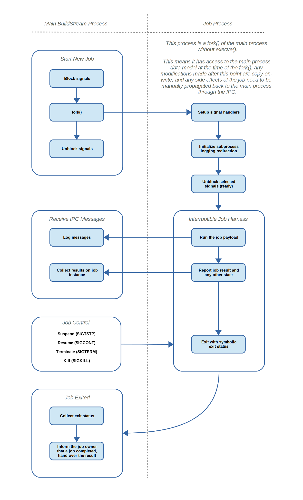
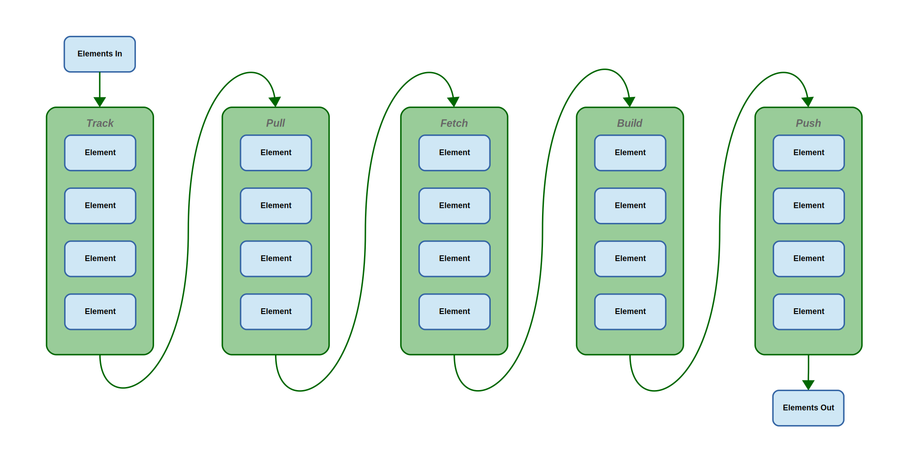
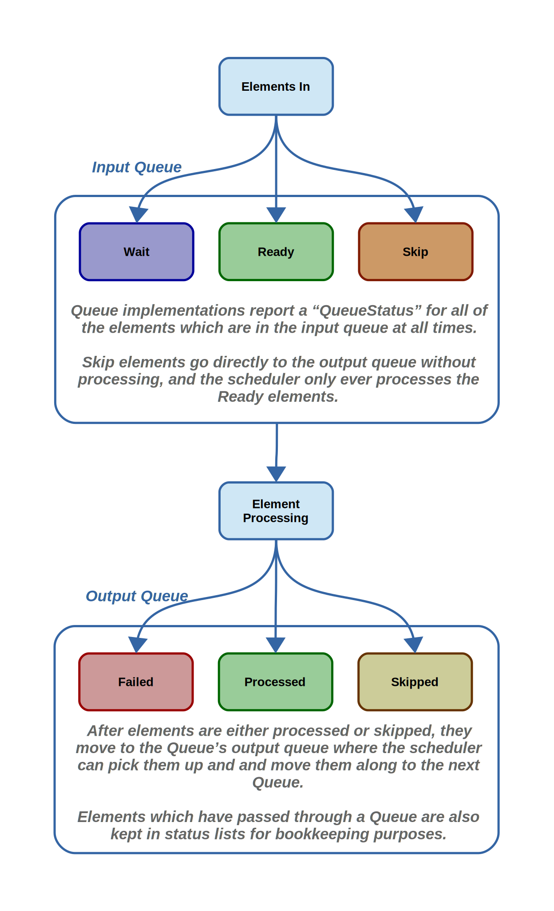
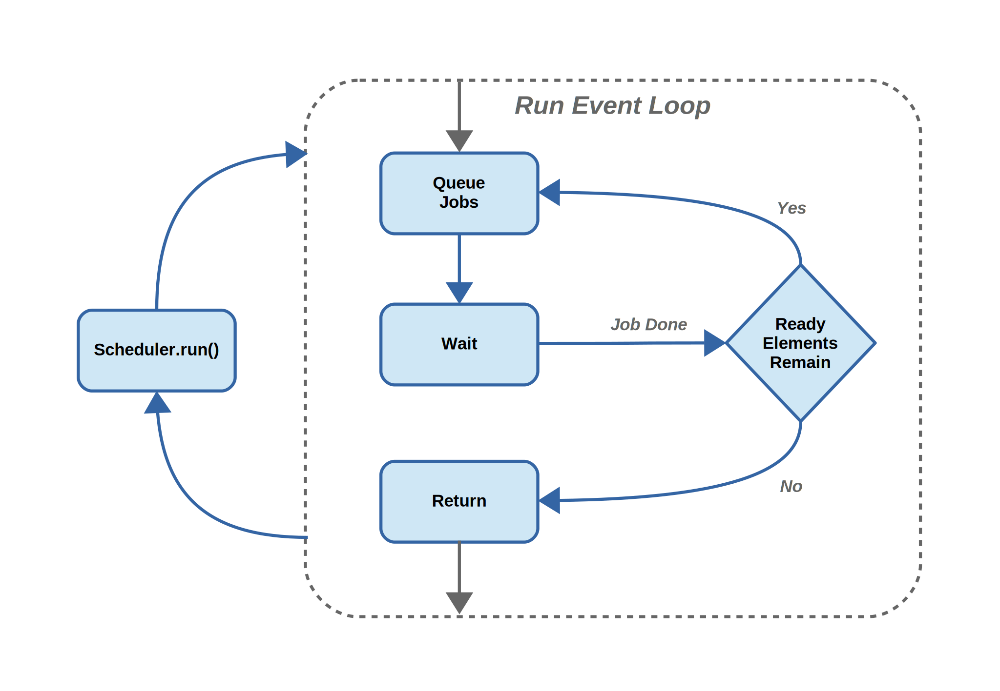

Scheduler
The Scheduler is what is responsible for running the main event loop and dispatching Jobs to complete tasks on behalf of Queues.
Jobs
The basic functionality of multiprocessing tasks is implemented by the base Job class, which is derived in a few ways but for now we’ll only talk about the ElementJob type since that is the most centric.
The Job class has the following responsibilities:
Starting the given job as a subprocess.
Offering an abstract method for subclasses to handle the outcome of a job when it completes.
Forcefully terminating its subprocess.
Suspending and resuming its subprocess.
Declaring the types of resources it will require, and which resources it will require exclusively.
Below is a rough outline of the interactions between the main process and job specific child process:
Resources
To understand how we manage load balancing in the scheduler it is important to understand resources.
For the scheduler, resources are domains which a Job can request which represent physical resources, such as the CPU or some network bandwidth, or the local artifact cache.
This is used by the Scheduler when consuming Jobs from Queues and deciding how many jobs can be run at a given time.
Queues
The various Queue implementations in the Scheduler can be combined such that parallelism is maximized. For example one can Track and Build inside the same session, in this way one does not need to wait for a tracking session to complete in order to start building.
The input elements to the scheduler are expected to be sorted in depth first order whenever the order is important, again allowing maximum parallelism at build time.
The Queue implementations are:
Track
The tracking queue must always come first if it is used in the given session. This is because the Source “ref”, and consequently the cache key of any elements which have been requested for tracking, cannot be known until tracking is complete.
Pull
The pull queue tries to obtain a built artifact from a remote artifact server, it should be placed in advance of the fetch queue if used, since we can safely avoid fetching if fetching is not imperative, and we already have a cached artifact.
Fetch
The fetch queue attempts to download source code to build the given element, this activity is sometimes skipped if the artifact is already present, or if the exact source code is already present.
Build
The build queue attempts to build the element if its artifact is not locally present.
Push
The push queue attempts to push the resulting artifact to a remote artifact server.
Queue internals
Internally, the queue has an input queue and an output queue.
When elements are on the input queue they get queried for their QueueStatus in order to determine which elements should be processed or moved from the input queue to the output queue. When elements are on the output queue, they are ready to be consumed by the scheduler and moved on to the next queue; however each queue holds on to the result status of every element which passed through for later reference and reports to the user.
Scheduler
The scheduler itself has the main responsibility of popping off jobs from the existing queues it was given, and running the jobs as long as elements remain to be processed.
A huge simplification of this can be visualized as follows:
This is implemented by iterating over the Queues given to the scheduler and processing any “Ready” elements so long as there are sufficient resource tokens available for the ready elements to run, and by moving the “Done” elements onto the subsequent queues in the list of queues.
Note
When looking for “Ready” elements in the queues, we iterate over the queue list in reverse order. This is important to allow elements to get as far as they can in the queue list as fast as possible, and helps to prevent resource starvation.